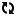

| Live statistics | Total |
|---|---|
| Number of triples |  |
| Number of distinct classes | |
| Number of distinct predicates | |
| Number of distinct subjects (s->p->o) | |
| Number of distinct objects (s->p->o) | |
| Number of blank nodes | |
| Number of empty literals | |
| Number of literals |
| Live charts |
|---|
| Predicates and total number of triples |
| Predicate domains vs. total number of triples |
| Subject domains vs. number of distinct subject |
| Literal datatypes |